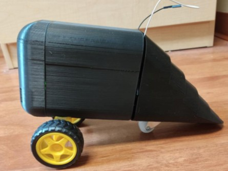
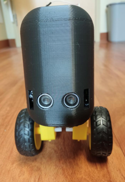

Gru-mobile: Interactive Toy Development
Project Type: Freshman-Year BME Team Project
Project Overview
The Gru-mobile a children's toy designed as part of an introductory Biomedical Engineering team project. Our goal was to create an interactive, engaging, and functional toy aimed at younger children to get them intrested in Engineering and stem fields.
Our team worked together to produce a survey and gather data, which helped us establish design criteria and refine our concept throughout the development process. Working within a team, I contributed to producing a detailed CAD design, designing a functional sensing circuit using an Arduino microcontroller, and programming it in Arduino/C++. As the groups software lead, I spearheaded the programming which integrated the use of both IR and ultrasonic sensors to allow the toy to interact with its enviroment. This project highlights my ability to apply engineering principles, collaborate effectively, and develop innovative solutions in both circuit design and programming.
By the end of the project, we had a working prototype that would follow an object both forward and backward, turning as needed to maintain a following distance of 15 cm. We then conducted a second survey to evaluate the toy’s marketability, which yielded highly favorable results. With both the functional prototype and survey data, we compiled an executive summary and developed a presentation, which we delivered to our peers and instructors, demonstrating the engineering design process, technical implementation, and commercial potential of the Gru-mobile.
Final Design
After multiple iterations and refinements, the final Gru-mobile prototype successfully met the project’s design criteria. The robot featured an infrared and ultrasonic sensor system for object tracking, a microcontroller-driven motor control unit, and a custom 3D-printed chassis designed for stability and functionality. The final design ensured smooth movement, accurate following behavior, and a compact structure suitable for a children's toy.
Side View
Frontal View
Key Design & Engineering Aspects
- Consumer Analysis & Design Criteria : Developed multiple toy concepts and refined the best option using survey data and design criteria.
- Embbeded Systems: Programmed an ATmega328P microcontroller to process sensor data and control the vehicle’s movement.
- Sensor Integration: Utilized two infrared sensors and one ultrasonic sensor to detect object proximity and direction.
- CAD and 3D printing: Designed and printed a custom plastic chassis for housing electronic components.
- Project Presentation & Promotion: Created marketing materials and presented the final prototype to an audience.